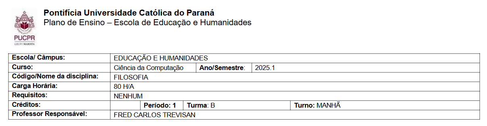

Trabalhos de filosofia
Esta disciplina, dirigida a acadêmicos de todos os cursos da universidade, trata do ato de filosofar a partir dos princípios da graduação (dedicação, autonomia e senso crítico). Nela os estudantes refletem sobre a condição humana nas dimensões pessoal, profissional e acadêmica, transformando opiniões em argumentos fundamentados. Ao final, são capazes de planejar seu percurso formativo. Deste modo, esta matéria foca em interpretação de conceitos filosóficos tendo majoritáriamente atividades relacionadas a elaboração de textos.

Aula3 parte1
Aqui está um exemplo de como são os textos que escrevemos:

Aula4 parte1